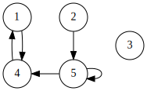
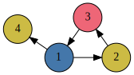
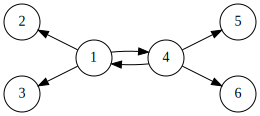
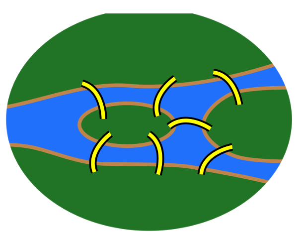

Michael Young and the other Digraphs authors
School of Computer Science &
School of Mathematics and Statistics
University of St Andrews
Unpublished,
Abstract
Digraphs is a package for the computational algebra system GAP that has been in development and use here in St Andrews since 2014.
It provides usable tools and algorithms for directed graphs, a concept that arises in many fields of Mathematics and Computer Science.
What is a directed graph?
A directed graph (or digraph) is a bunch of dots joined together with arrows:

A digraph \(G\), with 5 vertices and 5 edges
The dots are called vertices and the arrows are called edges.
Computing with digraphs
There are many things we may want to know about a digraph, to do with:
its edges
its size
its symmetries
which vertices can be accessed from which
the paths we can follow through it
and many other features.
Representing a digraph on a computer
Digraphs can be stored in a computer's memory using the digraph's out-neighbours – that is, the vertices that can be reached from each vertex. The out-neighbours of \(G\) are
\(1 \to 4\)
\(2 \to 5\)
\(3 \to \)
\(4 \to 1\)
\(5 \to 4, 5\)
or more concisely: \[\big((4), (5), (), (1), (4, 5)\big)\]
A common problem is to find cliques in a digraph: that is, a set of vertices that all have edges going to each other. A digraph's clique number is the size of its largest clique.
In \(G\), one clique we can find is \(\{1, 4\}\), since vertices 1 and 4 have edges going to each other. There is no larger clique, so \(G\)'s clique number is 2.
Graph colouring
Another common problem is to colour all the vertices so that no two vertices connected by an edge share the same colour. We like to use the smallest possible number of colours, and this number is called the chromatic number.

A digraph \(H\) with chromatic number 3
Finding symmetries
Many computational digraph problems are easier to solve if we know something about the symmetries of the digraph. A symmetry (or automorphism) of a digraph is a way of swapping its vertices around so that it still has edges in the same places.

A digraph \(J\) with many symmetries
In \(J\), we can swap vertices 2 and 3 without changing the shape of the digraph. Similarly we can swap 1 with 4, so long as we also move 2, 3, 5 and 6 appropriately.
All a digraph's automorphisms form a group, and once we have calculated it we can use group theory to learn more about the digraph.
Applications
Digraphs have countless real-world applications, ranging from mathematics to physical sciences, social sciences and humanities.
Members of a social network form the vertices of a digraph, with edges representing interactions. A brain's neurons are a digraph, with paths representing information being processed.
Navigating a network also uses digraphs. One of the earliest graph theory problems is the Seven Bridges of Königsberg, which linked land masses in the Pregel River in the 18th century. Euler proved that it was impossible to cross all seven bridges just once each.

The Seven Bridges of Königsberg
A famous area of study is the unsolved Travelling Salesman Problem: how can you visit every city in a road network while travelling the shortest possible distance? A prize of $1 million has been offered for a fast algorithmic solution.